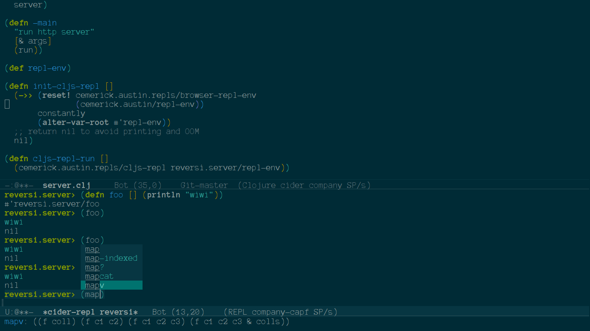

Clojure/Clojurescript Emacs 開發環境
Table of Contents
簡單的 clojure/clojurescript 開發環境。
基本功能安裝
推薦從 emacs 24 起，自帶的 package 系統來安裝。
首先加入更多 package 的安裝來源 melpa marmalade
(defvar marmalade '("marmalade" . "http://marmalade-repo.org/packages/")) (defvar gnu '("gnu" . "http://elpa.gnu.org/packages/")) (defvar melpa '("melpa" . "http://melpa.milkbox.net/packages/")) (add-to-list 'package-archives marmalade) (add-to-list 'package-archives melpa t) (package-initialize)
安裝 clojure-mode：
M-x package-install clojure-mode
這樣就有基本的代碼高亮和縮進功能了。
強力插件: CIDER (Clojure IDE and REPL)
安裝
M-x package-install cider
REPL (交互式編程環境)
安裝：
推薦使用leiningen 來管理你的 clojure project.
lein new myproject
安裝 cider-nrepl
在 ~/.lein/profiles.clj 加入以下兩行
{:user
{:plugins [[cider/cider-nrepl "0.7.0-SNAPSHOT"]]}}
使用：
接下來在你的 emacs 執行 M-x cider-jack-in
沒有意外的話，會出現一個 repl 的 buffer，關掉是 cider-quit 。
幾個必用的 emacs function , 把他們綁在你喜歡的 key 上吧。
cider-eval-last-sexp , cider-eval-defun-at-point ,
cider-switch-to-repl-buffer , cider-jump
Browser REPL (for clojurescript)
Austin-github 專案範例
在 ~/.lein/profiles.clj 加入以下兩行
{:user
{:plugins [[com.cemerick/austin "0.1.4"]]}}
在你的 cljs 檔案裡的 namespace 新增：
(:require [clojure.browser.repl])
在 REPL 的環境裡：
(def repl-env (reset! cemerick.austin.repls/browser-repl-env (cemerick.austin/repl-env))) (cemerick.austin.repls/cljs-repl repl-env)
接下來在新的 REPL 環境裡：
(js/alert "hello browser")
你的 browser 應該會有反應。
自動補全
安裝：
M-x package-install company
開啟：
M-x global-company-mode
預設開啟：在你的 init.el 加入這行。
(global-company-mode)
使用：
必須在你的 repl 開啟的時候才有效！
M-n, M-p 上下選擇候選鍵。

其他插件推薦
截圖
